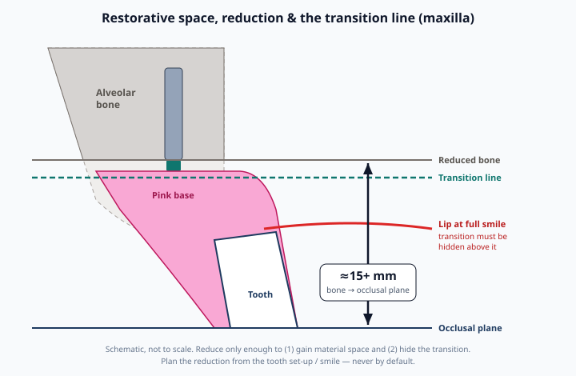
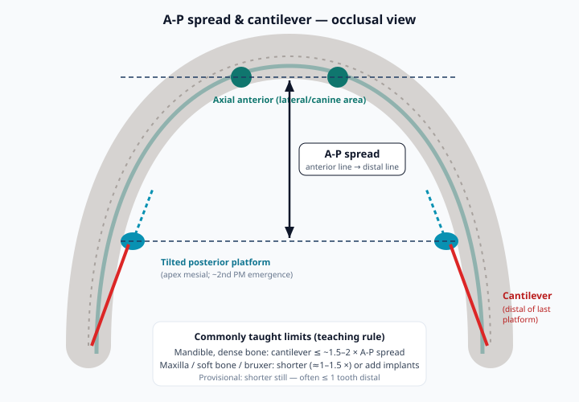
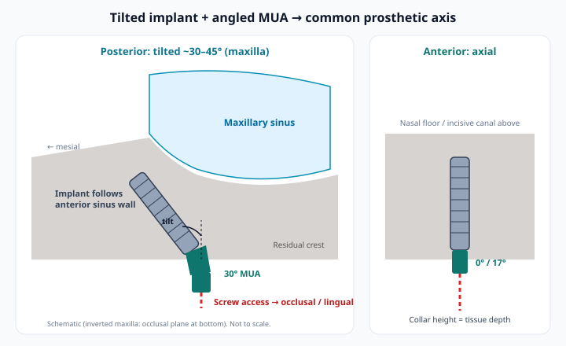

1 Learning objectives
By the end of Week 2 you should be able to:
- Read a full-arch CBCT systematically: bone volume/density, sinus, nasal floor, incisive canal, IAN, mental foramen and anterior loop.
- Plan from the teeth backward: tooth set-up → smile/lip → prosthetic space (~15+ mm) → reduction level → implant sites.
- Place the transition line where a high smile cannot show it, and justify every millimeter of bone removed.
- Lay out 4–6 implants with tilted posteriors, measure A-P spread, and set a safe provisional and final cantilever.
- Choose multi-unit abutment angulation and collar height so all screw channels exit lingual/occlusal on a common path.
- Decide guided vs freehand, set torque/ISQ go/no-go criteria, complete a medical/pharm/sedation review, and stage the tray and team.
2 CBCT-based planning & anatomy
Get the right scan first
- Field of view covering the whole arch (and opposing occlusion if you plan digitally). Large FOV only when it changes the plan — ALARA still applies (Jacobs 2018).
- Prosthetic information in the scan: a radiopaque duplicate of an acceptable denture / wax-up (dual-scan protocol) or a merged intraoral/denture scan. Without the teeth on the screen, you are planning bone, not a prosthesis.
- Lips relaxed and retracted, cotton rolls or a bite registration to separate the arches; terminal teeth stabilized so the scan isn't motion-blurred.
Systematic read — maxilla
| Structure | What to measure | Planning consequence |
|---|---|---|
| Maxillary sinus (anterior wall / floor) | Position of anterior wall relative to premolars; floor height; septa; mucosal thickening / sinusitis | Tilt posterior implant along anterior wall to emerge ~2nd premolar; sinus pathology → ENT/stage |
| Nasal floor & piriform rim | Height in lateral/canine zone | Anterior implant length; avoid nasal perforation |
| Incisive canal | Width, position after reduction | Usually avoid; plan anterior implants lateral to it |
| Residual ridge | Width/height in each zone; buccal concavities | Where reduction creates width; fenestration risk |
| Density | Grayscale / relative HU (not absolute on CBCT) | Soft posterior maxilla → under-prep, longer/tilted implants, extra implant |
Systematic read — mandible
- Mental foramen & anterior loop: locate bilaterally on cross-sections. Distal implants commonly sit mesial to the foramen and tilt distally over the loop; respect a safety margin (Greenstein & Tarnow 2006 review anterior loop length variability—measure, don't assume).
- Inferior alveolar canal in posterior sites if you plan 5–6 implants.
- Lingual concavity / sublingual artery canals in the anterior mandible — perforation here is a hemorrhage emergency, not a nuisance.
- Knife-edge ridge: plan reduction to a width that houses the implant with bone around it.
Out of scope: zygomatic and pterygoid implants for severe maxillary atrophy (Bedrossian “zone 1 bone only”). Recognize the case on CBCT and refer or stage — these are advanced-training procedures.
3 Restorative-driven planning & prosthetic space
Plan in this order, every time: teeth → face → space → bone → implants. Approve the tooth position (denture try-in, digital set-up, or the patient's existing acceptable denture) before you open the planning software.
Pre-treatment evaluation (Bedrossian-style)
Bedrossian et al. (2008) describe a systematic pretreatment evaluation for fixed maxillary implant prostheses: assess lip support (does the patient need a flange?), smile line / visibility of the prosthesis–tissue transition, and the vertical position of the planned teeth relative to the residual ridge, then map available bone in three zones — zone 1 anterior (canine to canine), zone 2 premolar, zone 3 molar. Bone in all three zones allows axial implants; bone in zones 1–2 only points to the tilted-implant (All-on-4 style) concept; zone 1 only points to sinus grafting or zygomatic options. They recommend a minimum of 4 implants for a fixed maxillary prosthesis.
How much vertical space?
| Prosthesis | Typical vertical space taught | Why |
|---|---|---|
| Screw-retained FP3 hybrid (metal/titanium bar + acrylic/composite) | ≈15 mm or more (reduced bone/tissue → occlusal plane) | Bar + MUA + teeth + pink bulk; fracture resistance; cleansable intaglio |
| Monolithic / layered zirconia full-arch | ≈12–15 mm minimum per most lab specs | Connector height and thickness over MUAs and screw channels |
| Immediate PMMA conversion (provisional) | Same envelope as the final | Thin provisionals fracture over MUAs — the classic week-2 phone call |
Exact minimums differ by lab, material and design — ask your lab for their number in writing and plan to it.
4 Bone reduction planning & the transition line

Two reasons to reduce — and only two
- Material space — reach the ~15 mm envelope (Section 3).
- Hide the transition line — in a high-smile maxilla, the junction must sit apical to (behind) the upper lip at maximum smile; in the mandible, below the lower lip at speech.
Secondary benefits: a flat, wide platform for implants and seating the conversion; removal of infected sockets and sharp crest.
Measure it like a surgeon, not a sculptor
- Record maximum smile display with photos/video; measure from the planned incisal edge to the lip at full smile.
- In software, mark the planned incisal edge, transition line and reduction plane; read the reduction in mm per zone (anterior often differs from posterior).
- Transfer to surgery with a bone reduction guide (pin-retained) or measured reference marks from a fixed landmark.
- Over-reduction costs implant length, nerve distance and lip support — it is irreversible.
5 Implant number, position & A-P spread
The All-on-4 layout
Two anterior axial implants (≈ lateral/canine region) and two posterior implants tilted distally (commonly ~30–35°, up to ~45°) so the platform emerges near the second premolar while the apex stays mesial to the sinus (maxilla) or mental foramen (mandible) (Maló 2003; Krekmanov 2000). Tilting increases A-P spread and shortens the cantilever without grafting.

A-P spread & cantilever — working rules
- A-P spread: larger is better; tilted distal implants exist mostly to make it larger.
- Cantilever (final): commonly taught ≤ ~1.5–2 × A-P spread in a dense mandible; shorter in the maxilla, soft bone or a bruxer. Rangert et al. (1989) showed that cantilevered loads magnify forces on the implants nearest the cantilever — the lever arm is the risk.
- Cantilever (provisional): shorter than the final, often ending at the first molar or premolar while integrating.
When 4 isn't enough
| Go to 5–6 implants when… | Why |
|---|---|
| Soft maxillary bone / borderline torque expected | Redundancy if one implant fails to integrate |
| Heavy bruxer or opposing natural dentition / implants | Load sharing, shorter cantilever |
| Small A-P spread (square arch) | Add distal support to shorten cantilever |
| Planned segmented / zirconia final with longer span | Material and design requirements |
Evidence: tilted and axial implants showed no significant difference in marginal bone loss in systematic review (Del Fabbro & Ceresoli 2014). The ITI 2018 review of implant number found similar implant and prosthesis survival with fewer than five vs five or more implants per arch (most often 4 vs 6 in the maxilla) (Daudt Polido 2018). More implants are a risk-management choice, not a survival-rate requirement.
6 Multi-unit abutments & angulation
Multi-unit abutments (MUAs) move the restorative interface to a common, slightly supragingival level, correct implant angulation, and let you screw the conversion on and off without touching the implant connection — the backbone of a screw-retained full arch (and a big upgrade from Zest-retained designs).

Selection checklist
- Angle: straight (0°) for axial anteriors; 17° for moderate correction; 30° for tilted posteriors (exact angles vary by system — check your catalog).
- Collar (cuff) height: matched to soft-tissue thickness so the MUA platform sits at or just above the tissue after healing; plan it from the CBCT/tissue scan, confirm with a depth gauge on the day.
- Screw-channel exit: rotate angled MUAs (indexing) so the channel exits lingual/occlusal — never facial.
- Seating torque: per manufacturer IFU (straight and angled MUAs often have different values). Verify seating radiographically before the conversion.
- Order extras: one spare of each angle/height you plan, plus temporary cylinders, healing caps and spare prosthetic screws.
7 Guided vs freehand
| Approach | Strengths | Watch-outs |
|---|---|---|
| Freehand with bone reduction reference / denture duplicate | Flexible; adapts to surprises; low cost | Relies on experience for tilt and spread; harder to pre-fabricate the provisional |
| Bone reduction guide (pin-fixed) ± pilot guide | Transfers the planned reduction plane; keeps orientation | Pin position must be planned outside implant sites; seat on bone, not tissue |
| Stackable guides (base/fixation → reduction → implant → prosthetic) | One fixed base references every step, enables a pre-made provisional placed in the planned position | Expensive, needs mouth opening for guided drills; any base-seating error propagates to every layer |
Recent case series (Martins et al. 2024) describe a fully digital All-on-4 workflow with printed base, implant and prosthetic stackable guides that permitted predictable reduction and immediate prosthesis connection. Remember the accuracy limits from Section 2.
Watch · stackable guide workflow
ImplaStation (public YouTube) — software walk-through of base guide, reduction plane, osteotomy guide, locks and prosthetic guide. Software-specific; watch for the sequence, not the clicks.
Case write-up (external)
FOR.org patient case — Digitally driven All-on-4 with stackable guides and photogrammetry (base guide pinned to bone, reduction, implant guide, prosthetic guide).
Open FOR.org caseFurther video (external)
Glidewell Education — Full-arch immediate loading using a stackable surgical guide.
Open Glidewell video8 Primary stability targets & plan B
Write your go/no-go numbers in the plan before surgery so the decision on the day is mechanical, not emotional.
| Measure | Common immediate-load target | Notes |
|---|---|---|
| Insertion torque | ≥30–35 Ncm per implant (many prefer 35–45 for tilted posteriors) | Used as inclusion criteria across immediate-load studies (Gallucci 2014; Papaspyridakos 2014). Don't over-torque dense mandible—compression necrosis risk. |
| ISQ (RFA) | ≥60–65 commonly used | Adjunct; measure on implant or MUA per device instructions |
| Splinting | Rigid one-piece provisional, cross-arch | Distributes load; passive fit essential |
Plan B tree (decide now)
- One implant low, the rest strong: place an additional implant if planned/possible, or leave the weak implant out of the provisional (cover/healing screw) and load the rest if spread and number remain adequate.
- Two or more low / poor spread: no immediate fixed. Deliver the converted denture as a relined removable interim; load after integration.
- Guide doesn't seat or anatomy differs: pre-planned freehand protocol or stop and stage.
9 Medical & pharmacologic risk review
| Factor | What to check | Planning response |
|---|---|---|
| Antiresorptives (bisphosphonates, denosumab) & antiangiogenics | Drug, route (oral vs IV/SC), dose (osteoporosis vs oncologic), duration, cancer history | Oncologic-dose IV bisphosphonate / denosumab: elective implants generally avoided (high MRONJ risk). Osteoporosis-dose: lower risk, but informed consent, minimize trauma, consider prescriber discussion (AAOMS 2022). |
| Diabetes | Recent HbA1c, hypoglycemia history, complications | Controlled diabetes: survival similar to non-diabetics; poor control → more peri-implantitis and late failure (Wagner 2022). Many clinicians defer elective full-arch above ~8% and coordinate with the PCP. Schedule mornings; check glucose on the day. |
| Smoking / vaping | Amount, willingness to stop | Higher failure and infection risk and more marginal bone loss (Chrcanovic 2015). Document; cessation counseling; CAUTION score. |
| Anticoagulants / antiplatelets | Agent (warfarin INR, DOAC, single/dual antiplatelet), indication, prescriber | Multiple extractions + alveoloplasty = higher bleeding risk procedure. Follow current guidance (e.g., SDCEP 2022) and the prescriber — do not stop independently. Local hemostatics, sutures, tranexamic acid per protocol. |
| Other | Head/neck radiation, immunosuppressants/steroids, uncontrolled CV disease, allergies (penicillin, latex), OSA | Medical clearance; antibiotic and steroid plan per your protocol; airway plan (Section 10). |
10 Sedation & anesthesia planning
- Who sedates? Your permit level determines what you can do (Florida requires Board-issued sedation permits). Many surgeons start full-arch with a dentist anesthesiologist or CRNA so the surgeon focuses on surgery.
- Pre-sedation evaluation: ASA class, airway (Mallampati, neck, STOP-BANG for OSA), meds, NPO instructions, escort, pre-op vitals (ADA 2016 sedation guidelines).
- Monitoring & rescue: pulse oximetry, BP, capnography for moderate/deep sedation, emergency drugs/AED, trained second person, reversal agents.
- Local anesthesia plan: blocks + infiltration with long-acting agent for post-op comfort; total-dose calculation by weight.
- Duration: surgery + conversion may run 3–5+ hours for a first case — plan breaks, positioning and the conversion step after the patient is awake enough for occlusion.
11 Armamentarium, team & pre-op workflow
Tray checklist
| Category | Items |
|---|---|
| Extraction / flap | Periotomes/elevators, forceps, #15 blades, periosteal elevators, retractors (Minnesota, Seldin), curettes, rongeurs |
| Bone reduction | Large round / barrel carbide or bone-reduction burs, piezo (optional, near nerve/sinus), bone file, reduction guide + fixation pins, irrigation |
| Implant | Surgical kit + motor with torque readout, implants in planned + backup sizes (incl. longer lengths), depth/direction gauges, ISQ device |
| Prosthetic | MUAs (all planned angles/heights + spares), MUA drivers/torque wrench, angle-correction/try-in tools, temporary cylinders, healing caps, prosthetic screws |
| Conversion | Immediate denture / printed provisional, rubber dam squares, pickup resin (and pink), acrylic burs, polishing kit, articulating paper |
| Closure & adjuncts | Sutures (e.g., 4-0 resorbable / PTFE per preference), hemostatics, PRF centrifuge (optional), bone graft for sockets (optional) |
| Imaging | Periapical/pano capability to verify MUA seating before pickup |
Team roles
- Surgeon (you): plan sign-off, surgery, go/no-go call.
- Surgical assistant: retraction, suction, irrigation, instrument flow.
- Circulator / implant coordinator: opens implants/MUAs, records lot numbers, torques & ISQs on the worksheet.
- Sedation provider + monitor: vitals log, airway, recovery.
- Restorative/conversion lead (you or a lab tech/second doctor): conversion, occlusion, polish.
Pre-op timeline (example)
- T-4 to -6 weeks: records, CBCT with prosthetic info, photos/video, set-up try-in, medical consults.
- T-3 weeks: plan finalized in software, guides/provisional ordered, MUAs and implants ordered with spares.
- T-1 week: written consent incl. plan B, Rx (antibiotics/analgesics/rinse per your protocol), sedation instructions, team huddle.
- T-1 day: tray and component check against the plan; guides test-fitted on model; confirmation call.
- Day of: time-out (patient, arch, plan, allergies, sedation), then execute (Week 3).
12 Case planning worksheet & vignettes
Fill this out for every case; the printable version is on the study sheet.
| Item | Record |
|---|---|
| Arch / prosthesis / FP class | Max / Mand · hybrid / zirconia · FP2 / FP3 |
| Smile display & lip support | mm at full smile · flange needed? |
| Prosthetic space after reduction | ___ mm (target ≈15+) |
| Planned reduction | Anterior ___ mm · posterior ___ mm · guide Y/N |
| Implants | Sites, diameter × length, tilt angle |
| A-P spread / cantilever | ___ mm / final ___ mm · provisional ___ mm |
| MUAs | Angle + collar height per site · spares ordered |
| Anatomy margins | Sinus / nasal / IAN / mental foramen / loop — distances ≥2 mm |
| Stability criteria | Torque ≥___ Ncm · ISQ ≥___ · plan B written |
| Medical / pharm | HbA1c · antiresorptive · anticoagulant · smoking · clearance |
| Sedation | Provider · level · ASA · airway notes |
| Team & tray | Roles assigned · checklist done |
Is this plan ready? Score each vignette
GO = plan ready as written · CAUTION = fix something first · NO = wrong plan for immediate fixed.
Plan A — Mandible, 64M, non-smoker
- 4 implants: 2 axial anterior, 2 distal tilted ~30° mesial to the mental foramina; 3 mm from the measured anterior loop
- A-P spread 14 mm; final cantilever planned 20 mm, provisional ending at first premolar
- Post-reduction space 16 mm; 30° MUAs posterior, straight anterior; torque target ≥35 Ncm; plan B written
Plan B — Maxilla, 59F, high smile line
- Full smile shows 4 mm of gingiva above the planned incisal edges
- Plan: FP3 hybrid, no bone reduction "to save bone"; 11 mm of space from ridge to occlusal plane
- 4 implants with good torque expected; zirconia final requested
Plan C — Maxilla, 70F, breast cancer history
- Receiving denosumab 120 mg monthly for bone metastases
- Wants same-day fixed teeth; CBCT shows adequate zone 1–2 bone
- Plan: extractions, alveoloplasty, 4 implants, immediate load next month
References (verified sources)
- Maló P, Rangert B, Nobre M. “All-on-Four” immediate-function concept with Brånemark System implants for completely edentulous mandibles: a retrospective clinical study. Clin Implant Dent Relat Res. 2003;5 Suppl 1:2-9. doi:10.1111/j.1708-8208.2003.tb00010.x
- Maló P, de Araújo Nobre M, Lopes A, Moss SM, Molina GJ. A longitudinal study of the survival of All-on-4 implants in the mandible with up to 10 years of follow-up. J Am Dent Assoc. 2011;142(3):310-320. doi:10.14219/jada.archive.2011.0170
- Krekmanov L, Kahn M, Rangert B, Lindström H. Tilting of posterior mandibular and maxillary implants for improved prosthesis support. Int J Oral Maxillofac Implants. 2000;15(3):405-414. PMID 10874806
- Bedrossian E, Sullivan RM, Fortin Y, Malo P, Indresano T. Fixed-prosthetic implant restoration of the edentulous maxilla: a systematic pretreatment evaluation method. J Oral Maxillofac Surg. 2008;66(1):112-122. doi:10.1016/j.joms.2007.06.687
- Rangert B, Jemt T, Jörneus L. Forces and moments on Brånemark implants. Int J Oral Maxillofac Implants. 1989;4(3):241-247. PMID 2700747
- Del Fabbro M, Ceresoli V. The fate of marginal bone around axial vs. tilted implants: a systematic review. Eur J Oral Implantol. 2014;7 Suppl 2:S171-189. PMID 24977252
- Daudt Polido W, Aghaloo T, Emmett TW, Taylor TD, Morton D. Number of implants placed for complete-arch fixed prostheses: a systematic review and meta-analysis. Clin Oral Implants Res. 2018;29 Suppl 16:154-183. doi:10.1111/clr.13312
- Gallucci GO, Benic GI, Eckert SE, Papaspyridakos P, Schimmel M, Schrott A, Weber HP. Consensus statements and clinical recommendations for implant loading protocols. Int J Oral Maxillofac Implants. 2014;29 Suppl:287-290. doi:10.11607/jomi.2013.g4
- Papaspyridakos P, Chen CJ, Chuang SK, Weber HP. Implant loading protocols for edentulous patients with fixed prostheses: a systematic review and meta-analysis. Int J Oral Maxillofac Implants. 2014;29 Suppl:256-270. doi:10.11607/jomi.2014suppl.g4.3
- Morton D, Gallucci G, Lin WS, et al. Group 2 ITI Consensus Report: Prosthodontics and implant dentistry. Clin Oral Implants Res. 2018;29 Suppl 16:215-223. doi:10.1111/clr.13298
- Tahmaseb A, Wu V, Wismeijer D, Coucke W, Evans C. The accuracy of static computer-aided implant surgery: a systematic review and meta-analysis. Clin Oral Implants Res. 2018;29 Suppl 16:416-435. doi:10.1111/clr.13346
- Martins J, Rangel J, de Araújo Nobre M, et al. A new full digital workflow for fixed prosthetic rehabilitation of full-arch edentulism using the All-on-4 concept. Medicina (Kaunas). 2024;60(5):720. doi:10.3390/medicina60050720
- Jacobs R, Salmon B, Codari M, Hassan B, Bornstein MM. Cone beam computed tomography in implant dentistry: recommendations for clinical use. BMC Oral Health. 2018;18:88. doi:10.1186/s12903-018-0523-5
- Greenstein G, Tarnow D. The mental foramen and nerve: clinical and anatomical factors related to dental implant placement: a literature review. J Periodontol. 2006;77(12):1933-1943. doi:10.1902/jop.2006.060197
- Ruggiero SL, Dodson TB, Aghaloo T, Carlson ER, Ward BB, Kademani D. American Association of Oral and Maxillofacial Surgeons’ position paper on medication-related osteonecrosis of the jaws—2022 update. J Oral Maxillofac Surg. 2022;80(5):920-943. doi:10.1016/j.joms.2022.02.008
- Wagner J, Spille JH, Wiltfang J, Naujokat H. Systematic review on diabetes mellitus and dental implants: an update. Int J Implant Dent. 2022;8(1):1. doi:10.1186/s40729-021-00399-8
- Chrcanovic BR, Albrektsson T, Wennerberg A. Smoking and dental implants: a systematic review and meta-analysis. J Dent. 2015;43(5):487-498. doi:10.1016/j.jdent.2015.03.003
- Scottish Dental Clinical Effectiveness Programme (SDCEP). Management of Dental Patients Taking Anticoagulants or Antiplatelet Drugs. sdcep.org.uk guidance
- American Dental Association. Guidelines for the Use of Sedation and General Anesthesia by Dentists (adopted October 2016). ada.org (PDF)
- Misch CE. Contemporary Implant Dentistry — prosthetic options / crown-height space and biomechanics chapters (textbook; use current edition).
- Course context (general sources, not cited for specific numbers): Pikos Institute — Foundational Full Arch Therapy: All-on-XYZ / All-on-4 Level 2; SmartOnX.